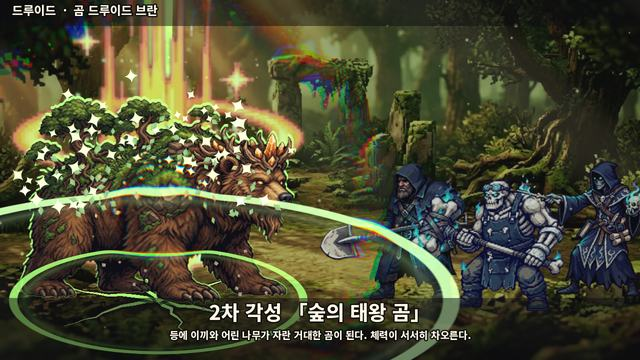
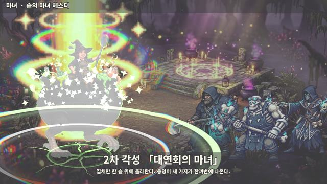
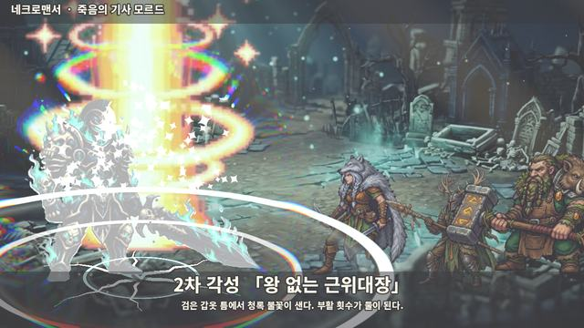
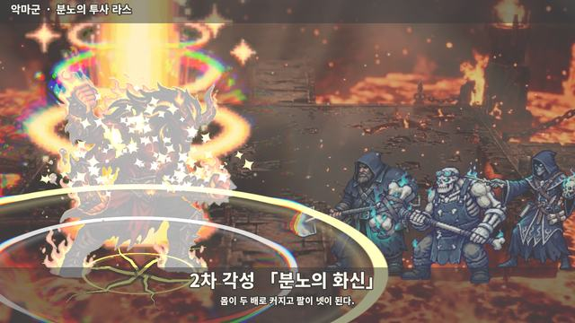
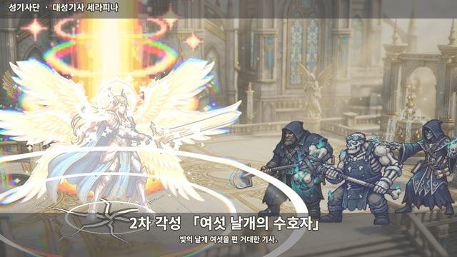
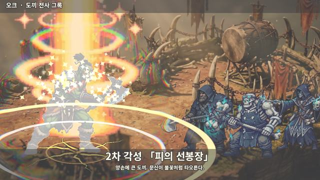
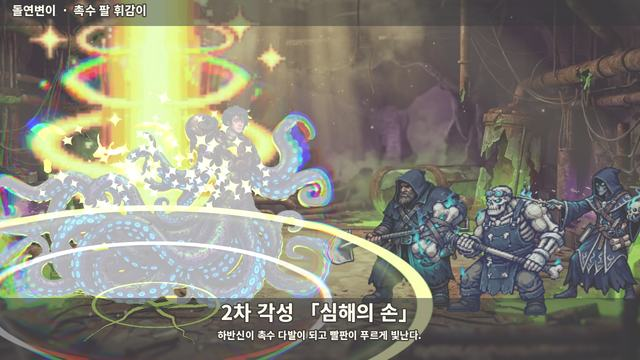
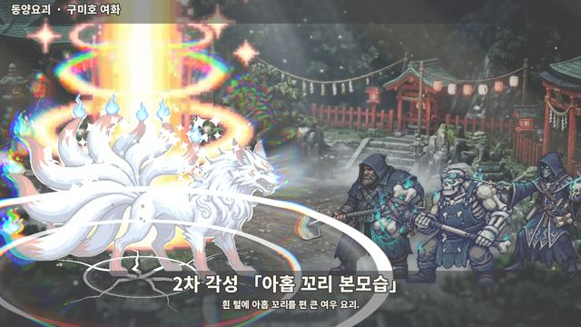
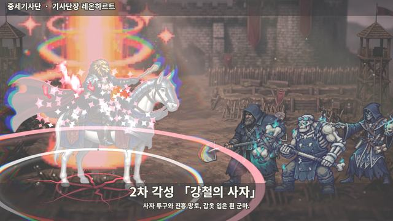

Flow로 뽑은 그림을 그대로 살려 움직인 확인용 영상입니다(게임에는 아직 넣지 않았습니다).
그림을 누르면 그 세력의 영상(20초, 되풀이)이 열립니다. 한 편에 20MB쯤이라 처음에 잠깐 불러옵니다.

드루이드곰 드루이드 브란
마녀솥의 마녀 헤스터
네크로맨서죽음의 기사 모르드
악마군분노의 투사 라스
성기사단대성기사 세라피나
오크도끼 전사 그록
돌연변이촉수 팔 휘감이
동양요괴구미호 여화
중세기사단기사단장 레온하르트